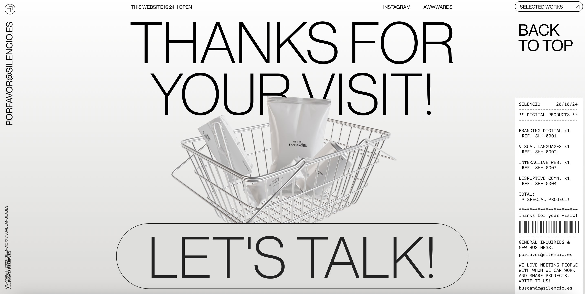

WEBS CON VALORES DE DISEÑO
En esta primera práctica voy a destacar la web que más me ha gustado de cada página indicada en el enunciado poniendo en práctica lo aprendido de HTML en clase.
-
SILENCIO
Esta web ha sido destacada en la página Awwwards como "site of the day" el 17 de abril del año pasado. Cuando la vi, la reconocí al instante porque ganó un premio LAUS en 2023 y recuerdo sorprenderme mucho por la originalidad y el dinamismo que le caracterizaba cuando se hacía scroll. Por lo que he decidido seleccionarla y hacer una reseña sobre ella.
Me parece única la forma que tiene de presentarse este estudio de diseño como si se tratara de una experiencia de compra de supermercado, con los productos obtenidos y el ticket de pago. A medida que el usuario va haciendo scroll van apareciendo objetos modelados en 3D y animados, presentando cada uno de los servicios de la agencia. Es una página web que es dinámica de principio a fin, e incluso cuenta con sonidos para que la experiencia sea más completa. Me gustan mucho el motion incluido y la composición de texto-imagen. Para mí, es un 10 de web.
 -
Sculpting Harmony
La siguiente web ha sido reconocida por la página The Webby Awards con dos premios este 2024. Me llamó la atención su vibrante color naranja y al acceder a la web me di cuenta de que tenía un gran desarrollo por detrás.
Al principio, se muestra la animación de unas líneas que van apareciendo y desapareciendo componiendo una ilustración, hasta que se termina de cargar por completo y te indica que hagas scroll para descubrir conocer la historia de Frank Gehry. Al igual que la anterior web, cuando el usuario hace scroll van modificando cosas y apareciendo otras; es decir, es "interactuable". Me interesa mucho la animación del texto, que también se ve afectada por el scroll, y lo mismo ocurre con los vídeos. Además, la narración está "dividida" por capítulos o partes, e incluso se han añadido unos subtítulos para comprender mejor la historia, por lo que es más fácil o "accesible" en el caso de no entender del todo el inglés. Pero si, por otro lado, el usuario solo sabe español, puede cambiar este ajuste desde el menú, que también sigue el estilo del resto de la página, y desde donde se podrá acceder rápidamente a cada capítulo sin necesidad de hacer scroll para encontrarlo. El contraste de colores, naranja, verde y negro me parece un gran acierto porque destaca frente al resto de webs que no se han decidido por una personalidad tan atrevida, y sobre todo cuando estamos hablando de un arquitecto con un estilo tan único y arriesgado. La experiencia es acompañada por música clásica interpretada por la Filarmónica de Los Ángeles, que en mi opinión casa muy bien con el tema de la web.
No conocía esta web y sin duda se añade como nueva incorporación a mi lista de favoritas.
-
Nomadic Tribe
Nomadic Tribe es una historia contada a través de una web súper interactuable, realizada por el estudio MakeMePulse y con la intención de felicitar el año nuevo y homenajear a Moebius. Me interesó al ver el thumbnail en la página de premios The FWA, en la cual se la nominó como web de febrero de 2019 y posteriormente como "web of the year". Ya ahí me surgió curiosidad y al entrar entendí el reconocimiento.
He de decir que la pantalla de carga es algo larga, pero merece la pena la espera porque es una experiencia preciosa. Las ilustraciones son muy bonitas pero es que, además, se puede interactuar con ellas, lo que me parece una locura y seguramente de las cosas más complejas de desarrollar de todo lo que he reunido en esta primera práctica. En esta también le acompaña sonido, se va narrando la historia y se incluyen subtítulos mientras el usuario interactúa con los recursos de la web. Además, se hace uso del efecto Parallax, del cual hemos conocido su significado en la clase de la semana pasada. Gráficamente es muy bonito y el cuento es una metáfora de la vida y de los nuevos comienzos.
He investigado un poco sobre este estudio y al parecer han ganado otros premios con este proyecto, entre ellos un Awwward. Han colaborado con empresas y marcas muy importantes internacionalmente, como Netflix, la NBA, HBO Max, etc. Hacen un gran trabajo y me alegro mucho de haberlos podido conocer con esta práctica porque me parecen muy inspiradores y distintivos.
-
Serious Business
Este último sitio lo he encontrado en la página CSS Design Awards, y se trata de la web de un estudio de Branding, estrategia y diseño digital de Alemania. Además de este premio, también ha sido reconocido por otras entidades como Awwwards un tutiplén de veces, Red Dot Design Awards, Behance y muchos más. De todas las webs que he mencionado en esta práctica, esta es la única que no es interactuable (a excepción de un pequeño detalle al principio y final de la página, que dependiendo de hacia dónde muevas el ratón, la sombra del logotipo cambia, o los ojos del mismo se mueven en dirección al cursor). Sin embargo, he querido destacarla porque es muy dinámica, mucho más de lo que suelen ser las webs de estudios, así que por ello he creído necesario incluirla en esta práctica.
La forma en la que se presentan los servicios, junto a un ejemplo en formato de vídeo y las funciones realizadas (como UXUI Design, User Testing, Product Prototype, Mobile UI...) hace que sea más fácil y rápido de comprender qué y cómo realizan su trabajo. El uso de colores hace que estos servicios se puedan diferenciar correctamente y además van en consonancia con la personalidad del estudio. Todo está animado, desde los textos e imágenes hasta los detalles más simples. Me han gustado mucho las transiciones de los servicios, como ya he mencionado antes, pues son muy suaves. Y lo mismo ocurre con la parte de "about", en la que se presenta al equipo con vídeos cortitos mientras el usuario hace scroll.
También debo mencionar que me ha llamado mucho la atención el nombre de la agencia y que jueguen humorísticamente con ello; no dejan de ser profesionales con muy buen desarrollo, pero igualmente tienen un tono irónico que me parece entrañable.
Estas han sido las webs que más me han gustado de las páginas de premios en las que teníamos que buscar. Ha sido muy entretenido e interesante poder descubrir nuevos estudios y gente tan creativa, así como conocer las posibilidades gráficas que existen (aunque parece que el desarrollo y la programación ha debido ser un trabajo muy complejo).